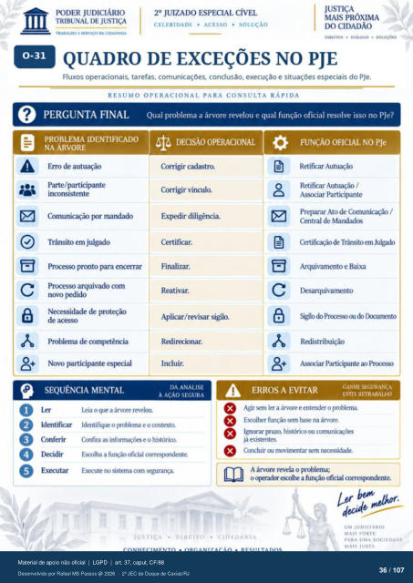

Transcrição automática em português, ainda não revisada. Confira grafia, prazos e termos jurídicos na imagem e no PDF antes de utilizar.
A DA CIDADANIA
CELERIDADE • ACESSO • SOLUÇÃO
SoruçOES
QUADRO DE EXCEÇÕES NO PJE
Fluxos operacionais, tarefas, comunicações. conclusão, execução e situações especiais do PJe.
RESUMO OPERACIONAL PARA CONSULTA RÁPIDA
PERGUNTA FINAL Qual problema a árvore revelou e qual função oficial resolve isso no PJe?
PROBLEMA IDENTIFICADO
NA ÁRVORE
Erro de autuação Parte/particilxmte
inconsistente IX)r mandado
Trânsito em julgado PrcxesM) pronto para encerrar
arquivado com novo
Necessidade de proteção de acesso
Problema de cornFtência Novo participante especial
SEQUÊNCIA MENTAL
DECISÃO OPERACIONAL
Corrigir cadastro. Corrigir vínculo.
Expedir diligência. Finalizar.
Reativar. Aplicar/revisar sigilo.
O o
FUNÇÃO OFICIAL NO PJe
Retificar Autuação Retificar Autuação /
Asscwiar Participante Preparar Ato de Comunicação /
Central de Mandados Certificação de Trânsito em Julgado
Arquivamento e Baixa Iksarquivanmto
Sigilo do Prtxesso ou Ikxunmto Ass«riar Participante ao
Incluir.
DA ANÁLISE
À AÇÃO SEGURA
O Ler Ickntificar
Conferir Ikcidir
leia o que a árvore revelou. Identifique o problema e o contexto.
Confira as e o histórico. Escolha a função oficial correspndente.
Em•ute no sistema com segurança.
GANHE SEGURANÇA
ERROS A EVITAR
EVrrE RETRABALIIO
O Agir sem ler a árvore e entender o problema.
e Escolher função sem base na áwore.
e Ign«yar praztx históricx) ou
já existentes. Concluir ou movimentar
A árvore revela o problema; o a função oficial correspndente.
DIREITO
• CIDADANIA
UM JUDICIÁRIO
MAIS FORTE
PARA UMA SOCIEDADE
Ver também o infográfico original (página 36)
